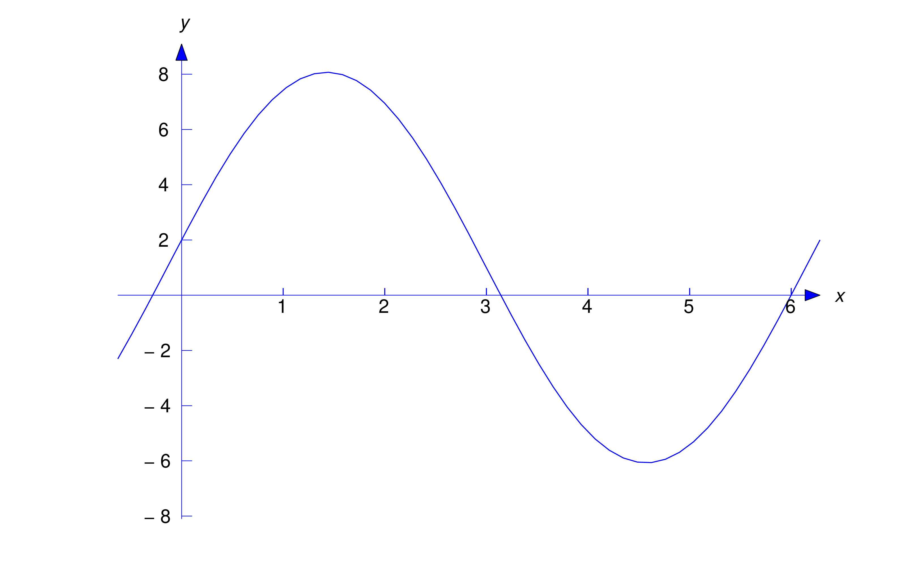
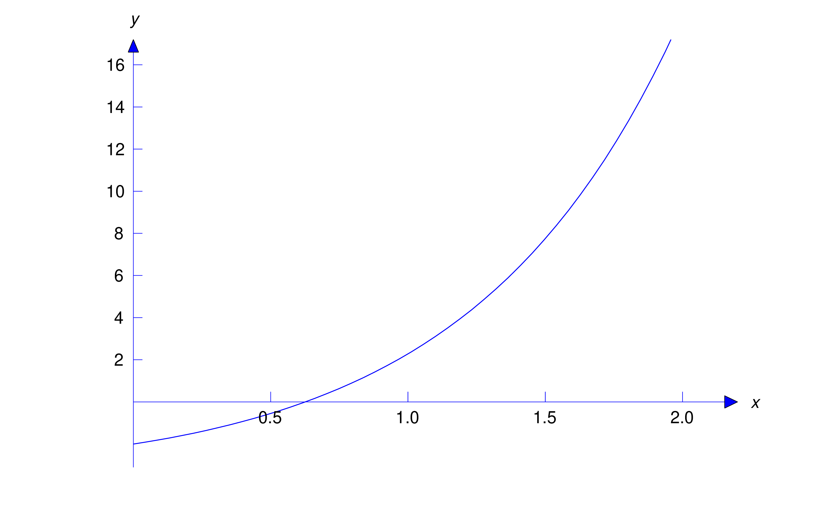

We’ll now consider the nonhomogeneous linear second order equation \begin
{equation} \label {eq:5.3.1} y''+p(x)y'+q(x)y=f(x)\end {equation}
where the forcing function \(f\) isn’t identically zero. The next theorem,
an extension of Theorem
5.1.1,
gives sufficient conditions for existence and uniqueness of solutions of
initial value problems for (5.3.1). We omit the proof, which is beyond the scope of this book.
Theorem 5.3.1
Suppose \(p,\) \(,q\) and \(f\) are continuous on an open interval
\((a,b),\) let \(x_0\) be any point in \((a,b),\) and let \(k_0\) and
\(k_1\) be arbitrary real numbers. Then the initial value problem \[
y''+p(x)y'+q(x)y=f(x), \quad y(x_0)=k_0,\quad y'(x_0)=k_1 \] has a
unique solution on \((a,b)\).
To find the general solution of (5.3.1) on an interval \((a,b)\) where \(p\), \(q\), and \(f\) are continuous,
it’s necessary to find the general solution of the associated homogeneous
equation \begin {equation} \label {eq:5.3.2} y''+p(x)y'+q(x)y=0 \end
{equation}
on \((a,b)\). We call (5.3.2) the
complementary equation
for (5.3.1).
The next theorem shows how to find the general solution of (5.3.1) if we know one solution \(y_p\) of (5.3.1) and a fundamental set of solutions of (5.3.2). We call \(y_p\) a
particular solution
of (5.3.1); it can be any solution that we can find, one way or another.
Theorem 5.3.2
Suppose \(p\), \(q\), and \(f\) are continuous on \((a,b)\). Let \(y_p\)
be a particular solution of \begin {equation} \label {eq:5.3.3}
y''+p(x)y'+q(x)y=f(x) \end {equation}
on \((a,b)\), and let \(\{y_1,y_2\}\) be a fundamental set of solutions
of the complementary equation \begin {equation} \label {eq:5.3.4}
y''+p(x)y'+q(x)y=0 \end {equation}
on \((a,b)\). Then \(y\) is a solution of \(\eqref {eq:5.3.3}\) on
\((a,b)\) if and only if \begin {equation} \label {eq:5.3.5}
y=y_p+c_1y_1+c_2y_2\end {equation}
where \(c_1\) and \(c_2\) are constants.
Proof
We first show that \(y\) in (5.3.5) is a solution of (5.3.3) for any choice of the constants \(c_1\) and \(c_2\). Differentiating (5.3.5) twice yields \[ y'=y_p'+c_1y_1'+c_2y_2'\quad \mbox{ and } \quad
y''=y_p''+ c_1y_1''+c_2y_2''\] so
since \(y_p\) satisfies (5.3.3) and \(y_1\) and \(y_2\) satisfy (5.3.4).
Now we’ll show that every solution of (5.3.3) has the form (5.3.5) for some choice of the constants \(c_1\) and \(c_2\). Suppose \(y\) is a
solution of (5.3.3). We’ll show that \(y-y_p\) is a solution of (5.3.4), and therefore of the form \(y-y_p=c_1y_1+c_2y_2\), which implies (5.3.5). To see this, we compute
We say that (5.3.5) is the
general solution
of \(\eqref {eq:5.3.3}\) on \((a,b)\).
If \(P_0\), \(P_1\), and \(F\) are continuous and \(P_0\) has no zeros on
\((a,b)\), then Theorem
5.3.2
implies that the general solution of \begin {equation} \label {eq:5.3.6}
P_0(x)y''+P_1(x)y'+P_2(x)y=F(x) \end {equation}
on \((a,b)\) is \(y=y_p+c_1y_1+c_2y_2\), where \(y_p\) is a particular
solution of (5.3.6) on \((a,b)\) and \(\{y_1,y_2\}\) is a fundamental set of solutions of \[
P_0(x)y''+P_1(x)y'+P_2(x)y=0 \] on \((a,b)\). To see this, we rewrite (5.3.6) as \[ y''+{P_1(x)\over P_0(x)}y'+{P_2(x)\over P_0(x)}y={F(x)\over
P_0(x)} \] and apply Theorem
5.3.2
with \(p=P_1/P_0\), \(q=P_2/P_0\), and \(f=F/P_0\).
To avoid awkward wording in examples and exercises, we won’t specify the
interval \((a,b)\) when we ask for the general solution of a specific
linear second order equation, or for a fundamental set of solutions of a
homogeneous linear second order equation. Let’s agree that this always
means that we want the general solution (or a fundamental set of
solutions, as the case may be) on every open interval on which \(p\),
\(q\), and \(f\) are continuous if the equation is of the form (5.3.3), or on which \(P_0\), \(P_1\), \(P_2\), and \(F\) are continuous and
\(P_0\) has no zeros, if the equation is of the form (5.3.6). We leave it to you to identify these intervals in specific examples and
exercises.
For completeness, we point out that if \(P_0\), \(P_1\), \(P_2\), and
\(F\) are all continuous on an open interval \((a,b)\), but \(P_0\)
does
have a zero in \((a,b)\), then (5.3.6) may fail to have a general solution on \((a,b)\) in the sense just
defined. Exercises
42
–
44
illustrate this point for a homogeneous equation.
In this section we to limit ourselves to applications of Theorem
5.3.2
where we can guess at the form of the particular solution.
Example 5.3.1
(a)
Find the general solution of \begin {equation} \label {eq:5.3.7}
y''+y=1\end {equation}
(b)
Solve the initial value problem \begin {equation} \label {eq:5.3.8}
y''+y=1, \quad y(0)=2,\quad y'(0)=7\end {equation}
S
OLUTION
(
a)
We can apply Theorem
5.3.2
with \((a,b)= (-\infty ,\infty )\), since the functions \(p\equiv 0\),
\(q\equiv 1\), and \(f\equiv 1\) in (5.3.7) are continuous on \((-\infty ,\infty )\). By inspection we see that
\(y_p\equiv 1\) is a particular solution of (5.3.7). Since \(y_1=\cos x\) and \(y_2=\sin x\) form a fundamental set of
solutions of the complementary equation \(y''+y=0\), the general solution
of (5.3.7) is \begin {equation} \label {eq:5.3.9} y=1+c_1\cos x+c_2\sin x\end
{equation}
S
OLUTION
(
b)
Imposing the initial condition \(y(0)=2\) in (5.3.9) yields \(2=1+c_1\), so \(c_1=1\). Differentiating (5.3.9) yields \[ y'=-c_1\sin x+c_2\cos x\] Imposing the initial condition
\(y'(0)=7\) here yields \(c_2=7\), so the solution of (5.3.8) is \[ y=1+\cos x+7\sin x\] Figure
5.3.1
is a graph of this function.

Figure 5.3.1\(y=1+\cos x+7\sin x\)
Example 5.3.2
(a)
Find the general solution of \begin {equation} \label {eq:5.3.10}
y''-2y'+y=-3-x+x^2\end {equation}
(b)
Solve the initial value problem \begin {equation} \label {eq:5.3.11}
y''-2y'+y=-3-x+x^2, \quad y(0)=-2,\quad y'(0)=1\end {equation}
S
OLUTION
(
a)
The characteristic polynomial of the complementary equation \[ y''-2y'+y=0
\] is \(r^2-2r+1=(r-1)^2\), so \(y_1=e^x\) and \(y_2=xe^x\) form a
fundamental set of solutions of the complementary equation. To guess a
form for a particular solution of (5.3.10), we note that substituting a second degree polynomial \(y_p=A+Bx+Cx^2\)
into the left side of (5.3.10) will produce another second degree polynomial with coefficients that
depend upon \(A\), \(B\), and \(C\). The trick is to choose \(A\), \(B\),
and \(C\) so the polynomials on the two sides of (5.3.10) have the same coefficients; thus, if \[ y_p=A+Bx+Cx^2\mbox {\quad then
\quad } y_p'=B+2Cx\quad \mbox{ and } \quad y_p''=2C\] so
so \(C=1\), \(B=-1+4C=3\), and \(A=-3-2C+2B=1\). Therefore
\(y_p=1+3x+x^2\) is a particular solution of (5.3.10) and Theorem
5.3.2
implies that \begin {equation} \label {eq:5.3.12} y=1+3x+x^2+e^x(c_1+c_2x)
\end {equation}
is the general solution of (5.3.10).
S
OLUTION
(
b)
Imposing the initial condition \(y(0)=-2\) in (5.3.12) yields \(-2=1+c_1\), so \(c_1=-3\). Differentiating (5.3.12) yields \[ y'=3+2x+e^x(c_1+c_2x)+c_2e^x\] and imposing the initial
condition \(y'(0)=1\) here yields \(1=3+c_1+c_2\), so \(c_2=1\). Therefore
the solution of (5.3.11) is \[ y=1+3x+x^2-e^x(3-x)\] Figure
5.3.2
is a graph of this solution.

Figure 5.3.2\(y=1+3x+x^2-e^x(3-x)\)
Example 5.3.3
Find the general solution of \begin {equation} \label {eq:5.3.13}
x^2y''+xy'-4y=2x^4 \end {equation}
on \((-\infty ,0)\) and \((0,\infty )\).
Solution
In Example
5.1.3,
we verified that \(y_1=x^2\) and \(y_2=1/x^2\) form a fundamental set of
solutions of the complementary equation \[ x^2y''+xy'-4y=0 \] on
\((-\infty ,0)\) and \((0,\infty )\). To find a particular solution of (5.3.13), we note that if \(y_p=Ax^4\), where \(A\) is a constant then both sides
of (5.3.13) will be constant multiples of \(x^4\) and we may be able to choose \(A\)
so the two sides are equal. This is true in this example, since if
\(y_p=Ax^4\) then \[
x^2y_p''+xy_p'-4y_p=x^2(12Ax^2)+x(4Ax^3)-4Ax^4=12Ax^4=2x^4 \] if
\(A=1/6\); therefore, \(y_p=x^4/6\) is a particular solution of (5.3.13) on \((-\infty ,\infty )\). Theorem
5.3.2
implies that the general solution of (5.3.13) on \((-\infty ,0)\) and \((0,\infty )\) is \[ y={x^4\over
6}+c_1x^2+{c_2\over x^2}\]
The Principle of Superposition
The next theorem enables us to break a nonhomogeous equation into simpler
parts, find a particular solution for each part, and then combine their
solutions to obtain a particular solution of the original problem.
Theorem 5.3.3
\([\)The Principle of Superposition\(]\)
Suppose \(y_{p_1}\) is a particular solution of \[
y''+p(x)y'+q(x)y=f_1(x) \] on \((a,b)\) and \(y_{p_2}\) is a particular
solution of \[ y''+p(x)y'+q(x)y=f_2(x) \] on \((a,b)\). Then \[
y_p=y_{p_1}+y_{p_2} \] is a particular solution of \[
y''+p(x)y'+q(x)y=f_1(x)+f_2(x) \] on \((a,b)\).
It’s easy to generalize Theorem
5.3.3
to the equation \begin {equation} \label {eq:5.3.14} y''+p(x)y'+q(x)y=f(x)
\end {equation}
where \[ f=f_1+f_2+\cdots +f_k\] thus, if \(y_{p_i}\) is a particular
solution of \[ y''+p(x)y'+q(x)y=f_i(x) \] on \((a,b)\) for \(i=1\), \(2\),
…, \(k\), then \(y_{p_1}+y_{p_2}+\cdots +y_{p_k}\) is a particular
solution of (5.3.14) on \((a,b)\). Moreover, by a proof similar to the proof of Theorem
5.3.3
we can formulate the principle of superposition in terms of a linear
equation written in the form \[ P_0(x)y''+P_1(x)y'+P_2(x)y=F(x) \]
(Exercise
39
); that is, if \(y_{p_1}\) is a particular solution of \[
P_0(x)y''+P_1(x)y'+P_2(x)y=F_1(x) \] on \((a,b)\) and \(y_{p_2}\) is a
particular solution of \[ P_0(x)y''+P_1(x)y'+P_2(x)y=F_2(x) \] on
\((a,b)\), then \(y_{p_1}+y_{p_2}\) is a solution of \[
P_0(x)y''+P_1(x)y'+P_2(x)y=F_1(x)+F_2(x) \] on \((a,b)\).
Example 5.3.4
The function \(y_{p_1}=x^4/15\) is a particular solution of \begin
{equation} \label {eq:5.3.15} x^2y''+4xy'+2y=2x^4 \end {equation}
on \((-\infty ,\infty )\) and \(y_{p_2}=x^2/3\) is a particular solution
of \begin {equation} \label {eq:5.3.16} x^2y''+4xy'+2y=4x^2 \end
{equation}
on \((-\infty ,\infty )\). Use the principle of superposition to find a
particular solution of \begin {equation} \label {eq:5.3.17}
x^2y''+4xy'+2y=2x^4+4x^2 \end {equation}
on \((-\infty ,\infty )\).
Solution
The right side \(F(x)=2x^4+4x^2\) in (5.3.17) is the sum of the right sides \[ F_1(x)=2x^4\quad \mbox { and }\quad
F_2(x)=4x^2\] in (5.3.15) and (5.3.16). Therefore the principle of superposition implies that \[
y_p=y_{p_1}+y_{p_2}={x^4\over 15}+{x^2\over 3} \] is a particular solution
of (5.3.17).